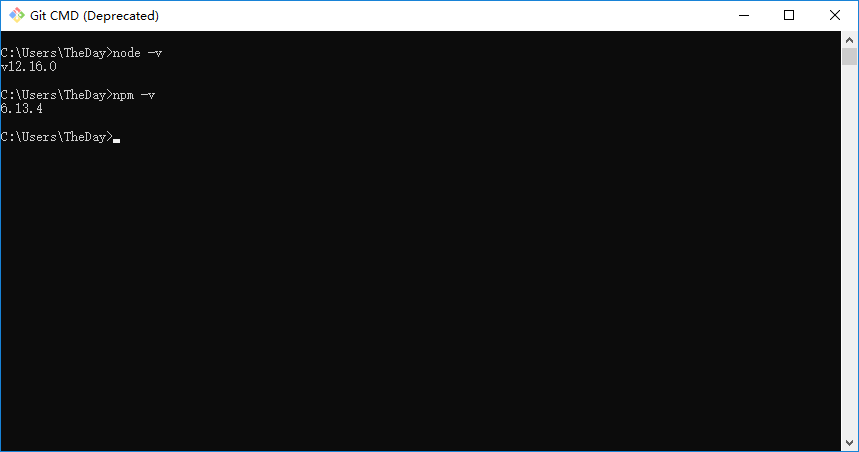
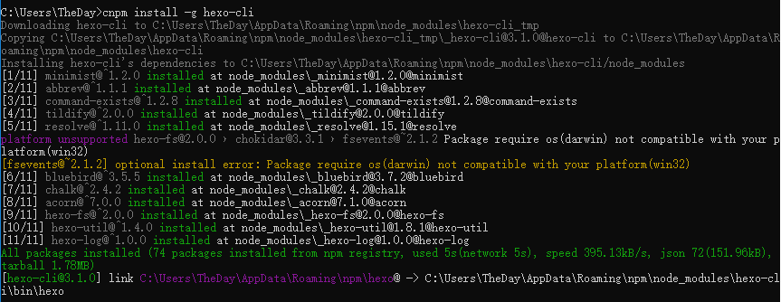
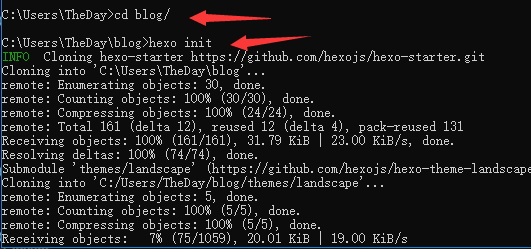

将本地Blog部署到Github
写在前边的话
当你完成你的博客时，想不想让更多的人看到？
本文将介绍部署Blog到GitHub的方法，希望对你有帮助！下载Git
准备Git
按其步骤进行安装即可。
在最近添加中找到这一个(带有CMD的)
打开待用
下载Nodejs
进入Node.js网站
安装
下载完成后，在Git中分别输入node -v和npm -v
检查版本

更换镜像源
选择使用淘宝镜像源
输入 npm install -g cnpm –registry=http://registry.npm.taobao.org
安装并初始化Hexo
输入 cnpm install -g hexo-cli 进行安装

此时会自动在用户名文件夹里创建一个blog文件夹
先输入 cd blog/ 进入该文件内
再输入 hexo init 进行初始化

创建Repositories
打开Github
点击new
输入你想创建的网址
注意这里使用你的github用户名，例如下图
我的github用户名为The-Day
我就选择The-Day.github.io
最后点击绿色按钮完成
修改_config.yml文件
在blog目录下找到_config.yml这一文件
使用 Sublime Text打开(记事本，VScode也可以，至于为什么推荐sublime text以后再说)
找到最下面deploy一行，按照下面的图片进行更改
注意:
·repo后面的网址为你在GitHub中创建的Repositories网址
·git要加单引号
·冒号后一定要有空格
·没有repo和branch手动加上即可
部署blog
输入 cnpm install hexo-deployer-git –save
第一次会遇到下图类似的提示
输入git config –global user.email “you@example.com“
git config –global user.name “Your Name”
引号内分别为你的GitHub邮箱帐号和你的用户名
加载完会弹出一个窗口
按照要求填就全部完成了
最后
打开你的网址看一下吧！
备注
如果有任何不明白的地方，可以和我联系，我会帮助你